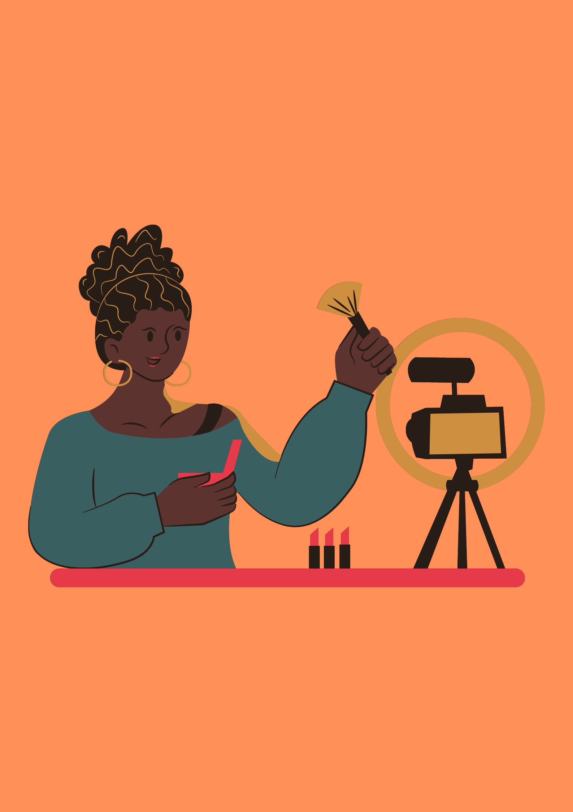
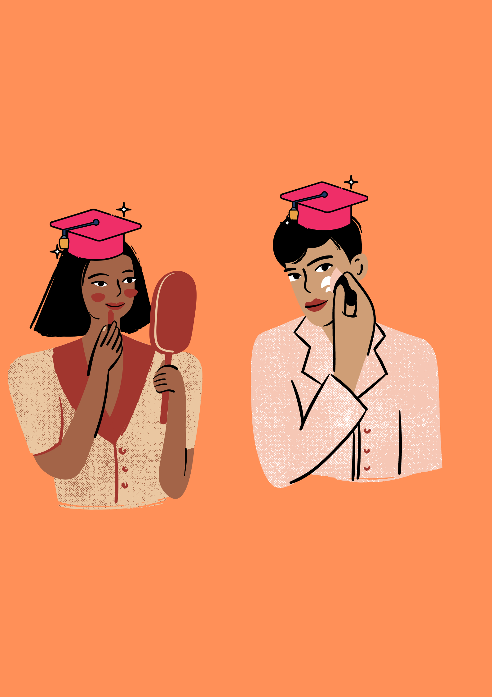

Our MissionHere at Makeup with W, our mission is to empower makeup lovers everywhere to take care of themselves and their products, because as we say here, 'a healthy face is a happy face !' Your face is a canvas and we simply want to ensure it stays fresh, healthy and clean |
 |
|  |
Our VisionWe hope to be able to reach makeup lovers everywhere and be able to educate them on simple but key products and practices to ensure makeup is a fun, creative outlet, not one that damages your skin and causes unncessary stress We want to help you help your skin! |
Our TeamOur FounderOur founder, Wanjiru aka W is a Computer Science student, Makeup Enthuaist/Artist and a general lover of makeup She started this page to help makeup lovers everywhere She always tells our customers that she is simply helping them 'do what[they] love, in a healthy, hassle-free way!' Our EstheticianOur Esthetician, Jo, is a board certified and higly trained Esthetician and fellow Makeup Enthuaist and she ensures customers buy products that best suit their skin and will protect it from damage Our Makeup consultantOur MUA, Oph, was the winner of BBC's Glow Up makeup compettion and has been in the industry for the last five years, so she knows what products give the makeup look a clean and flawless finish ! Though she does consultaions and recommendations, Oph recommends going to BeautyPedia to check out the kind of products recommended for your skin! Our Head of ProductionOur Head of Production, Herm, deals with the manufacturing, packaging and testing of our products. He is both a trained Esthetician and certified Cosmetics Scientist so our products are in good hands - you can trust us! |